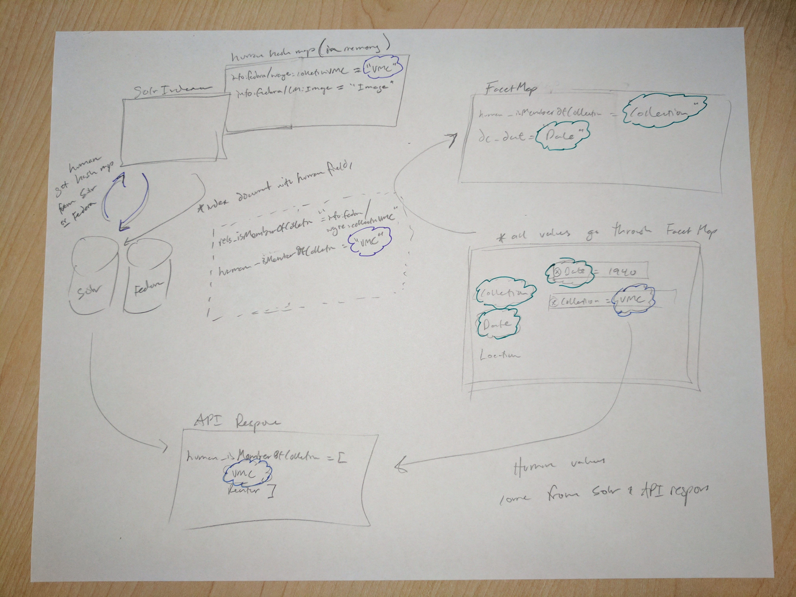

{
"published": true
}I'm going to go on the record as saying I don't know if "opinionation" is a word, but I'd sure like it to be.
One of the most difficult, interesting, and complex things we deal with when building out a Digital Collections platform is representing information from digital objects in a meangingful way on the "front-end", access system. In end-to-end frameworks like Rails or Django, there is often tight coupling between models and views. If you give a model an attribute like title, it's relatively easy when rendering a page to say something along the lines of, object.title to place the title.
We do things a bit differently. One of our goals from the beginning of this long and wild ride, has been a distinct and purposeful disconnect between our "back-end" and "front-end". We use an in-house built API to communicate with our front-end, that renders relevant information to the page. But in a situation like this, where coupling is a bit looser, where does one house opinions or translations from back-end, database fields to front-end, human readable information? Where is the Solr field rels_isMemberOfCollection translated to Collection?
Our solution in our v1 system was to have the front-end query the back-end every page load, requesting a hash of values to help translate. It looked something like this:
info:fedora/CM:AllImage
:
"AllImage"
info:fedora/CM:Archive
:
"Archive"
info:fedora/CM:Audio
:
"Audio"
info:fedora/CM:Collection
:
"Collection"
info:fedora/CM:Container
:
"Container"
info:fedora/CM:ContentModel
:
"ContentModel"
info:fedora/CM:Document
:
"Document"
info:fedora/CM:HierarchicalFiles
:
"HierarchicalFiles"
info:fedora/CM:Image
:
"Image"
info:fedora/CM:Issue
:
"Issue"
info:fedora/CM:LearningObject
:
"Learning Object"
info:fedora/CM:Serial
:
"Serial"
info:fedora/CM:Video
:
"Video"
info:fedora/CM:Volume
:
"Volume"
info:fedora/CM:WSUebook
:
"WSUebook"
info:fedora/wayne:collectionAmericanPressman
:
"American Pressman"
info:fedora/wayne:collectionCFAI
:
"Changing Face of the Auto Industry"
info:fedora/wayne:collectionDFQ
:
"Detroit Focus Quarterly"
info:fedora/wayne:collectionDPLAOAI
:
"DPLA OAI-PMH"
info:fedora/wayne:collectionDSJ
:
"The Detroit Sunday Journal"
info:fedora/wayne:collectionDennisCooper
:
"Dennis Glen Cooper Collection"
info:fedora/wayne:collectionDigDressColl
:
"Digital Dress Collection"
info:fedora/wayne:collectionHeartTransplant
:
"First U.S. Human-to-Human Heart Transplant"
info:fedora/wayne:collectionHermanMiller
:
"Herman Miller Consortium Collection"
info:fedora/wayne:collectionLincolnLetters
:
"The Lincoln Letters"
info:fedora/wayne:collectionMIM
:
"Made in Michigan Writers Series"
info:fedora/wayne:collectionMOT
:
"Michigan Opera Theatre Performance Images"
info:fedora/wayne:collectionNightingale
:
"Florence Nightingale Collection"
info:fedora/wayne:collectionRENCEN
:
"Building the Detroit Renaissance Center"
info:fedora/wayne:collectionRamsey
:
"Eloise Ramsey Collection of Literature for Young People"
info:fedora/wayne:collectionReuther
:
"Walter P. Reuther Library Collection"
info:fedora/wayne:collectionReutherSwanger
:
"Toni Swanger Papers"
info:fedora/wayne:collectionUniversityBuildings
:
"Wayne State University Buildings Collection"
info:fedora/wayne:collectionVanRiperLetters
:
"Van Riper Family Correspondence"
info:fedora/wayne:collectionWPAscores
:
"WPA Music Manuscripts"
info:fedora/wayne:collectionWSUebooks
:
"Wayne State University eBooks"
info:fedora/wayne:collectionvmc
:
"Virtual Motor City"
No shame here, we were running a tight ship, and the overhead of that API call was small, as it was cached by Varnish on the back-end. But we wanted to improve this process. In addition to unnecessary API calls, it also required using that hash on the front-end to "translate" all values from the API response, in multiple places for a single page load.
There were two major things that needed translation:
info:fedora/CM:Image --> Imageinfo:fedora/wayne:collectionvmc --> Virtual Motor CityFor our v2 platform, we're splitting up these concerns.
The facets are small, and mostly unchanging, so for those we are creating a static hash that is embedded in PHP, front-end framework. That hash is used uniformally, and easily, across the system for translating facet names.
The more difficult concern was how to get human names from object identifiers when those come through in the facet results from Solr. The solution was to grab our spoons and dig backwards into the indexing process, and at the time of indexing, include a "human" form of the relationship. So where a Solr record formerly only had a rels_isMemberOfCollection:info:fedora/wayne:collectionvmc field/value, it now also contains a human_isMemberOfCollection:Virtual Motor City field/value as well. This means, our native Solr response is returning both rels_* and human_* facets, which are easily cherry-picked on the front-end. As a matter of efficiency, when records are indexed, a hash similar to the one outlined above is queried from Solr, but is then used across a batch-indexing job, sometimes thousands of records.

With lots of moving parts and control over those parts, it can be paralyzing sometimes to know what to change, and the ramifications downstream. But sometimes a piece of paper and pencil is the best bet for sketching out a new path forward.